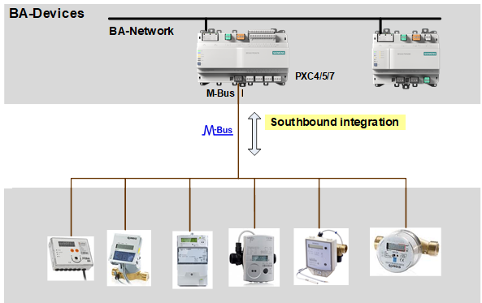

M总线
M-bus（仪表总线）旨在实现公用事业仪表的远程读取，例如热费分配设备、热量表、水表、燃气表，以及电表和供暖控制器（但有一些限制）。 M-bus 系统的主要应用目的是从连接的仪表中读出一组完整且一致的计量数据，以用于计费和可视化/diagnostics 目的。 M-bus 数据采集管理器充当客户端，下级充当服务器，以请求-响应消息传递模式交换消息。


PXC4/5/7 器件的 M 总线管理器实现将仅限于少数基本和通用协议功能。 PXC4/5/7 器件不会利用 M-bus 规范的所有其他特殊功能、选项和变体，因为这些协议机制的支持和解释是制造商特定的。
更多信息可以在 M-bus 专家文档中找到A6V16039082on SID.
M-bus 任务允许您创建网络拓扑并集成联网现场设备以进行测量。您可以添加网络、设备和数据点。
1 | 任务选择器 | 2 | 植物导航视图 |
3 | 工具栏 | 4 | M巴士区域 |
5 | 库和属性 |
|
|
① Task selector
任务 | 描述 |
|---|---|
I/O 配置 | |
MODBUS | |
M总线 | |
KNX PL-Link | |
BACnet references | |
BACnet objects | |
编程 |
② Plants navigation view
这Plants导航视图显示工厂中设备的层次结构。选择并右键单击植物以显示上下文菜单命令。
上下文菜单命令 | 描述 |
|---|---|
| 打开/close文件夹结构。 |
| 隐藏/unhide工厂信息。 |
筛选 | 输入字母以缩小对象视图。 |
添加植物 | 打开Add plant创建新植物的窗口。 |
添加文件夹 | 打开Add folder用于创建新文件夹的窗口。 |
删除 | 删除选定的元素。 |
复制 | 创建所选元素的副本。 |
重命名 | 打开Rename…用于为所选元素输入不同名称的窗口。 |
在节目中显示 | 打开选定的元素Programming编辑。 |
打开属性 | 打开Properties所选元素的。 |


③Toolbar
命令 | 描述 |
|---|---|
状态 | 指示应用程序的状态。绿色表示应用程序在线并正在运行或暂停。
|
查看 | 检查重复名称、I/Os 数量、趋势限制等。该检查在加载设备之前自动执行。 |
（玩） | 仅当设备在线时可见。激活在线会话并加载所选设备的更改。 |
（暂停） | 仅当设备在线且在线会话启动时可见。停用活动的在线会话。 |
（令人震惊） | 出于测试目的暂时抑制所有警报。 Note：如果由于现场设备状态为“Device-Missing”而触发多个报警（执行报警喷发），则仅将“Device-Missing”报警发送给相应的接收者。这可确保用户不会收到且必须确认多个警报。 |
 ，增量下载后序列号不可见。因此，需要完整下载才能使序列号可见。
，增量下载后序列号不可见。因此，需要完整下载才能使序列号可见。④ M-bus area
在中间的 M-bus 区域中，有一棵树可用于浏览 M-bus 网络的元素。
命令 | 描述 |
|---|---|
展开/Contract全部按钮 | 扩展或收缩整个 M-bus 树。 |
隐藏网络 | 隐藏网络树。 |
添加网络 | 打开Add network您可以在其中创建新网络的对话框。 |
添加设备 | 打开Add device您可以在其中创建新设备的对话框。 |
添加数据点 | 打开Add data point您可以在其中创建新数据点的对话框。 |
Property table
属性表提供了 M-bus 网络的概述。根据您的选择，有不同的列。
如果您选择Networks在离线模式下，您可以在工作场所表中看到以下元素：
柱子 | 描述 |
|---|---|
描述 | M-bus 网络的描述。 |
港口 | 虚拟财产。网络分配到的当前端口。 |
最大限度。波特率 | 最大波特率。 |
姓名 | 网络对象名称。 |
如果您选择M-bus device在离线模式下，您可以在工作场所表中看到以下元素：
柱子 | 描述 |
|---|---|
描述 | 设备的描述。 |
次要地址 | 序列号属性。 |
主要地址 | 网络地址属性。 |
波特率 | 通过下拉菜单选择的枚举。默认值：自动 |
投票时间 | 通过下拉菜单选择的枚举。默认值：T2。 |
设备类型 | 现场设备类型属性。有2个选择“M-bus设备”（默认）、“M-bus电平转换器” |
姓名 | 网络对象名称。名字从裤子的高度显示。 |
如果您选择M-bus data point在离线模式下，您可以在工作场所表中看到以下元素：
柱子 | 描述 |
|---|---|
描述 | 数据点的描述。 |
单元 | 显示 BACnet 对象单位。 |
类型 | 显示 BACnet 对象类型。 |
测量值 | 显示用于数据点或自定义的预设值的当前值（如果找不到）。单击它，将打开一个下拉菜单，其中包含给定数据类型的所有可用值。 |
数据类型 | 对象的数据类型属性。如果属性在对象类型上不可用，则显示为灰色。 |
功能码 | 显示功能码的当前值。 |
地址 | M-bus 网络内的端口地址。可编辑的数字字段。 |
（令人震惊） | 复选框允许启用 /disable BACnet 对象的固有警报扩展。 选择激活该对象的报警功能。 Note：如果同一对象触发多个警报（执行警报喷发），则仅向相应的接收者发送一个警报。这可确保用户不会收到且必须确认多个警报。 |
（热门） | 复选框允许为 IO 创建 /delete 趋势日志。创建的趋势日志会自动链接到 IO 的当前值。 选择以激活对象的趋势功能。 |
姓名 | 数据点对象名称。名称从工厂级别显示。 |
⑤ Library and Properties
这Library和Properties右侧区域有一个切换选项。这Library视图包含可以直接拖动到工作区域的元素。
Library
这Property视图显示所选元素的属性。中显示的项目Property 视图取决于所选对象类型。
Context menu
M-bus editor context menu
命令 | M-bus 当前离线 | M-bus在线 | 描述 | |
|---|---|---|---|---|
网络 | 添加网络 | 是的 | No | 打开Add network添加网络的对话框。 |
网络 | 添加设备 | 是的 | No | 打开Add device添加 M-bus 设备的对话框。 |
删除 | 是的 | No | 删除选定的对象。 | |
重命名 | 是的 | No | 打开Rename设备对话框，您可以在其中更改所选对象的名称和描述。 | |
确认报警 | No | 是的 | 确认警报状态。 | |
开始追踪 | No | 是的 | 打开Traces –Network查看窗口，您可以在其中查看发送和接收的 M-bus 电报以及日期和时间戳。仅适用于单个设备或整个网络。 | |
进口 | 是的 | No | 在用户的 PC 中打开本地路径以导入.csv文件。 | |
在节目中显示 | 是的 | 是的 | 打开Programming编辑。 | |
打开属性 | 是的 | 是的 | 打开所选对象的属性。 | |
设备 | 添加数据点 | 是的 | No | 打开Add data point您可以在其中创建新数据点的对话框。 |
删除 | 是的 | No | 删除选定的对象。 | |
复制 | 是的 | No | 创建选定对象的副本。 | |
重命名 | 是的 | No | 打开Rename设备对话框，您可以在其中更改所选对象的名称和描述。 | |
取消分配 | No | 是的 | 删除分配给 M-bus 网络的设备。 | |
确认报警 | No | 是的 | 确认警报状态。 | |
开始追踪 | No | 是的 | 仅在线时可用。打开Traces –Network查看窗口，您可以在其中查看发送和接收的 M-bus 电报以及日期和时间戳。仅适用于单个设备或整个网络。 | |
在节目中显示 | 是的 | 是的 | 打开Programming编辑。 | |
打开属性 | 是的 | 是的 | 打开所选对象的属性。 | |
PNV context menu
命令 | M-bus 当前离线 | M-bus在线 | 描述 | |
|---|---|---|---|---|
植物 | 添加植物 | 是的 | No | 打开Add plant对话框在 PNV 中添加新植物。 |
添加文件夹 | 是的 | No | 打开Add folder对话框中在 PNV 中选定的植物下添加一个新文件夹。 | |
删除 | 是的 | No | 删除选定的对象。 | |
复制 | 是的 | No | 创建选定对象的副本。 | |
重命名 | 是的 | No | 打开Rename设备对话框，您可以在其中更改所选对象的名称和描述。 | |
在节目中显示 | 是的 | 是的 | 打开Programming编辑。 | |
显示属性 | 是的 | 是的 | 打开所选对象的属性。 | |
数据点 | 添加植物 | 是的 | No | 打开Add plant添加新植物的对话框。 |
删除 | 是的 | No | 删除选定的对象。 | |
复制 | 是的 | No | 创建选定对象的副本。 | |
移至设备 | 是的 | No | 将选定的数据点移动到设备。 | |
重命名 | 是的 | No | 打开Rename设备对话框，您可以在其中更改所选对象的名称和描述。 | |
在节目中显示 | 是的 | 是的 | 打开Programming编辑。 | |
在设备中显示 | 是的 | 是的 | 在 M-bus 编辑器区域下方突出显示工作场所表中的数据点。 | |
显示属性 | 是的 | 是的 | 打开所选对象的属性。 | |
空旷的空间 | 添加植物 | 是的 | No | 打开Add plant添加新植物的对话框。 |
设备 | 添加植物 | 是的 | No | 打开Add plant添加新植物的对话框。 |
添加数据点 | 是的 | No | 打开Add data point您可以在其中创建新数据点的对话框。 | |
删除 | 是的 | No | 删除选定的对象。 | |
复制 | 是的 | No | 创建选定对象的副本。 | |
重命名 | 是的 | No | 打开Rename设备对话框，您可以在其中更改所选对象的名称和描述。 | |
在节目中显示 | 是的 | 是的 | 打开Programming编辑。 | |
打开设备 | 是的 | 是的 | 在 M-bus 编辑器工作区下方的工作区表中显示设备数据点。 | |
显示属性 | 是的 | 是的 | 打开所选对象的属性。 | |
文件夹 | 添加植物 | 是的 | No | 打开Add plant添加新植物的对话框。 |
添加文件夹 | 是的 | No | 打开Add folder对话框中在 PNV 中选定的植物下添加一个新文件夹。 | |
删除 | 是的 | No | 删除选定的对象。 | |
重命名 | 是的 | No | 打开Rename设备对话框，您可以在其中更改所选对象的名称和描述。 | |
打开属性 | 是的 | 是的 | 打开所选对象的属性。 | |
M-bus 设备的响应速度很慢。